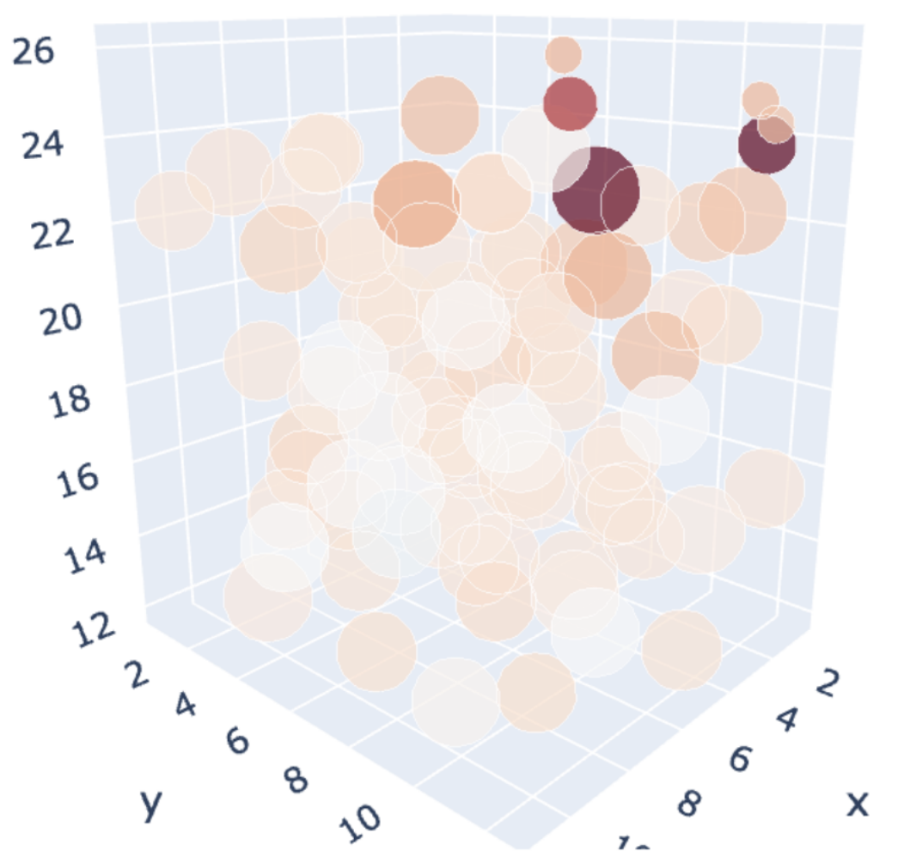
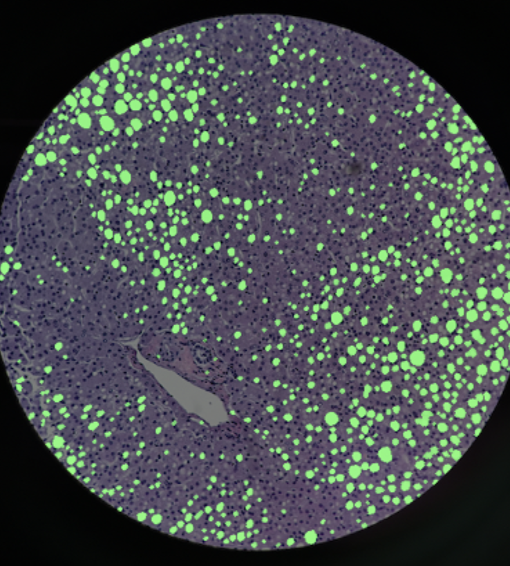
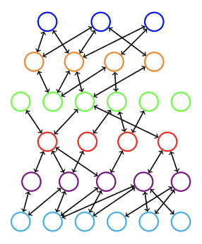

|
Katherine Xu I'm a CS PhD student at the University of Pennsylvania, where I'm grateful to be advised by Prof. Jianbo Shi. Previously, I was an undergraduate and master's student at MIT, where I collaborated with research groups at MIT CSAIL, MIT Quest for Intelligence, and MIT Environmental Solutions Initiative. I've also had the wonderful opportunity to intern at Meta and the Honda Research Institute. |
ResearchI'm broadly interested in computer vision, generative AI, and scene understanding. |

|
Amodal Completion via Progressive Mixed Context Diffusion
Katherine Xu, Lingzhi Zhang, Jianbo Shi CVPR, 2024 paper / project page / code Seeing the hidden in images using a pretrained diffusion model by tackling challenging occlusion and object co-occurrence. |
|

|
Chemistry Insights for Large Pretrained Graph Neural Networks
Katherine Xu, Janice Lan NeurIPS AI for Science Workshop, 2022 paper Analyzing neural networks trained on the Open Catalyst dataset by comparing their predictions with chemical intuition. Work done during an internship at Meta AI. |
|

|
A Novel Digital Algorithm for Identifying Liver Steatosis Using Smartphone-Captured Images
Katherine Xu*, Siavash Raigani*, A. Shih, S. G. Baptista, I. Rosales, N. M. Parry, S. G. Shroff, J. Misdraji, K. Uygun, H. Yeh, Katherine Fairchild, Leigh Anne Dageforde Transplantation Direct, 2022 paper / code Segmenting and quantifying liver steatosis using computer vision and image processing. |
|

|
Linking Threat Tactics, Techniques, and Patterns with Defensive Weaknesses, Vulnerabilities and Affected Platform Configurations for Cyber Hunting
Erik Hemberg, Jonathan Kelly, Michal Shlapentokh-Rothman, Bryn Reinstadler, Katherine Xu, Nick Rutar, Una-May O'Reilly arXiv, 2021 paper / project page / code
|
Teaching |
| Teaching Assistant, CIS 6800 Advanced Topics in Machine Perception, Fall 2023 |